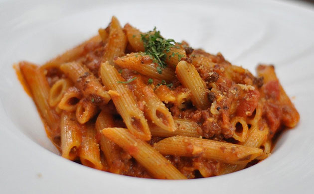
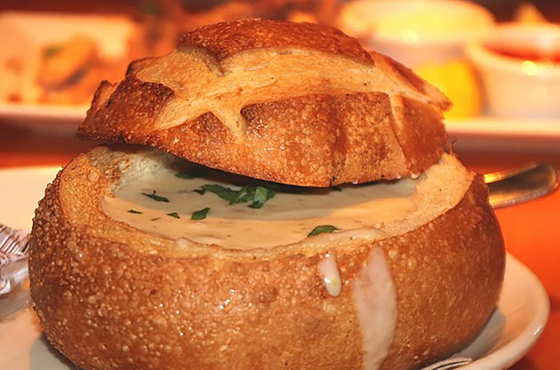
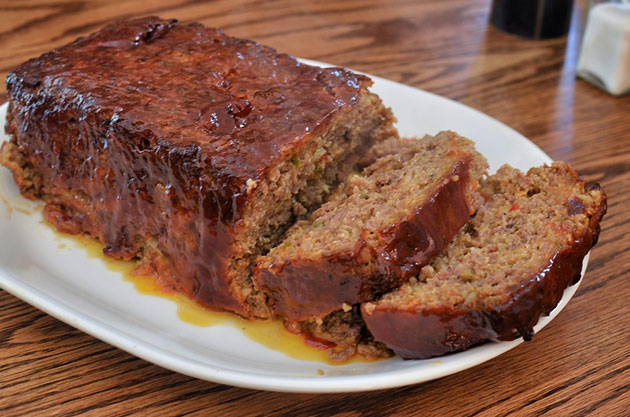
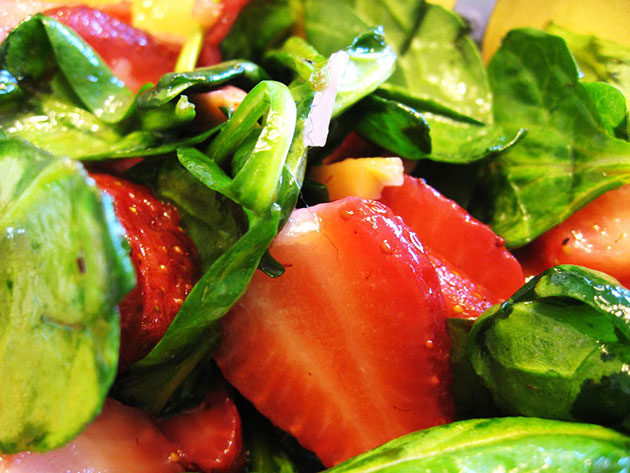

Welcome to the Gordon Recipe Cook Book!
Delicious homemade recipes sure to make your mouth water! From Papa Ben's Cinnamon Rolls covered in a smooth, shiny caramel to a healthy and delicious pizza dough from California Pizza Kitchen, there is a recipe for every family. We invite you to explore our site's many recipes. All are available for digital download.
Check out the author's original homepage website here and some highlighted recipes below!
Explore
Papa Ben's Cinnamon Rolls
A light and fluffy soft bread roll, risen to perfection and swirled with cinnamon and sugar. Topped off with a delicious, shimmering caramel sauce, it is a dessert sure to make your mouth water.
Explore
Papa Ben's Apple Pie
A buttery and flaky crust filled with a flavorful apple slice filling. Seasoned with cinnamon and sugar, it is a baked dessert sure to bring a smile to your face.
Explore

Baked Ziti
A cheesy tomato penne entree complete with a creamy comfort sauce and finished off with a crispy baked top.
Explore

Jill's Bread Bowl
A rich appetizer showcasing a baked sour dough bread shell filled with a creamy smoked ham and cheese dip, sure to make a great addition to any game day party.
Explore

Karen's Meatloaf
A hearty entree comprised of beef and various flavors from garlic and onion to dried sage and mustard. It's a meaty meal sure to entice even those who doubt its exquisite flavor profile.
Explore

Strawberry Spinach Salad
A bright and flavorful starter of spinach tossed with a light dressing and strawberries. A sweet, springtime snack sure to make a great addition to any picnic or spring party.